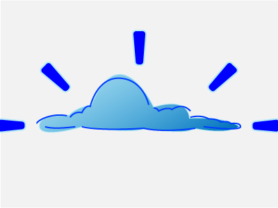
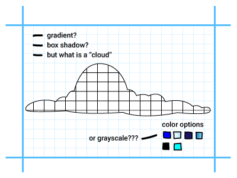
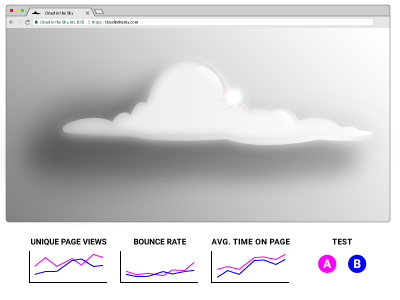

<!DOCTYPE html>

<html lang="en">

<head>
    <meta name="viewport" content="width=device-width, initial-scale=1.0"/>
    <link href='https://fonts.googleapis.com/css?family=Roboto:400,300,700' rel='stylesheet' type='text/css' />
    <title>Andrea&rsquo;s Portfolio: Design Process</title>
    <link href="css/reset.css" rel="stylesheet" />
    <link href="css/stylesheet.css" rel="stylesheet" />
    <link rel="icon" type="image/png" href="images/portfolio-icon.png" />
</head>

</html>

<body class="portfolio">

    <nav class="portfolio-nav">
        <section class="portfolio-nav-left-side">
            <h1 class="portfolio-nav-name">Andrea Leigh Williamson</h1>
            
        </section>
        <div class="portfolio-nav-links">
            <a data-scroll data-options='{ "easing": "easeOutCubic" }' class="portfolio-nav-link" href="#portfolio">PORTFOLIO</a>
            <a data-scroll data-options='{ "easing": "easeOutCubic" }' class="portfolio-nav-link" href="#about">ABOUT/CONTACT</a>
        </div>
    </nav>

    <section class="portfolio-process-body">
        <h2 class="portfolio-process-title">Design Process</h2>
        <p class="portfolio-process-blurb-intro">The following describes key steps in my design process. It works best when I collaborate closely with Product, Development, and stakeholders. Although the steps are presented sequentially, I often find that the design process is rarely linear. There can be multiple iterations within a step. Sometimes steps are skipped, or revisited multiple times. It all depends on the nature and goals of the project.</p>
        <div class="portfolio-process-row">
            
            <div class="portfolio-process-column">
                <h3 class="portfolio-process-header">Discover</h3>
                <p class="portfolio-process-blurb">In the first phase, an idea is discovered (i.e., a new app, a new feature, a redesign).</p>
                <ul class="portfolio-process-list">
                    <li class="portfolio-process-list-item"><span class="portfolio-process-list-item-emphasis">Find intention:</span> What is the purpose? What is the overall goal?</li>
                    <li class="portfolio-process-list-item">Write a mission statement</li>
                    <li class="portfolio-process-list-item"><span class="portfolio-process-list-item-emphasis">Market research:</span> Who are our competitors? What makes us different?</li>
                    <li class="portfolio-process-list-item"><span class="portfolio-process-list-item-emphasis">User research:</span> What type of user are we trying to attract? What kind of experience are we trying to optimize?</li>
                </ul>
            </div>
        </div>
        <div class="portfolio-process-row">
            
            <div class="portfolio-process-column">
                <h3 class="portfolio-process-header">Define</h3>
                <p class="portfolio-process-blurb">Next, the idea is defined and given more specific goals.</p>
                <ul class="portfolio-process-list">
                    <li class="portfolio-process-list-item"><span class="portfolio-process-list-item-emphasis">Content requirements:</span> List overall content categories</li>
                    <li class="portfolio-process-list-item"><span class="portfolio-process-list-item-emphasis">Technical requirements:</span> Mobile-friendly, required APIs, accessibility, etc.</li>
                    <li class="portfolio-process-list-item"><span class="portfolio-process-list-item-emphasis">User personas:</span> Storyboards for a type of user, user interviews</li>
                    <li class="portfolio-process-list-item"><span class="portfolio-process-list-item-emphasis">UI requirements:</span> Quick paper/pencil mockups that help define overall layout and organize content</li>
                </ul>
            </div>
        </div>
        <div class="portfolio-process-row">
            
            <div class="portfolio-process-column">
                <h3 class="portfolio-process-header">Design</h3>
                <p class="portfolio-process-blurb">In the design phase, the nitty-gritty UI elements are ironed out. UX goals are reviewed and modified if needed.</p>
                <ul class="portfolio-process-list">
                    <li class="portfolio-process-list-item"><span class="portfolio-process-list-item-emphasis">High-fidelity mockups</span> via Adobe Illustrator or Sketch</li>
                    <li class="portfolio-process-list-item"><span class="portfolio-process-list-item-emphasis">Interactive prototypes</span> via Invision or HTML/SCSS</li>
                    <li class="portfolio-process-list-item"><span class="portfolio-process-list-item-emphasis">Branding specifics:</span> Color schemes, logo design, content writing style, etc.</li>
                    <li class="portfolio-process-list-item"><span class="portfolio-process-list-item-emphasis">User interaction:</span> Specifics for user flows, transitions, animations, etc.</li>
                </ul>
            </div>
        </div>
        <div class="portfolio-process-row">
            
            <div class="portfolio-process-column">
                <h3 class="portfolio-process-header">Develop</h3>
                <p class="portfolio-process-blurb">The prototypes are brought to life on the web and deployed.</p>
                <ul class="portfolio-process-list">
                    <li class="portfolio-process-list-item"><span class="portfolio-process-list-item-emphasis">Development:</span> Turn prototype into HTML/SCSS, JS; hook up front-end with back-end</li>
                    <li class="portfolio-process-list-item"><span class="portfolio-process-list-item-emphasis">Testing:</span> Test and debug before release</li>
                    <li class="portfolio-process-list-item"><span class="portfolio-process-list-item-emphasis">Tracking:</span> Set up tracking, a/b tests, etc.</li>
                    <li class="portfolio-process-list-item">Deploy!</li>
                </ul>
            </div>
        </div>
        <div class="portfolio-process-row">
            
            <div class="portfolio-process-column">
                <h3 class="portfolio-process-header">Test</h3>
                <p class="portfolio-process-blurb">After deploy, analytics and user feedback are reviewed. Testing will help inform the next steps.</p>
                <ul class="portfolio-process-list">
                    <li class="portfolio-process-list-item">Track data from analytics</li>
                    <li class="portfolio-process-list-item">Track any a/b tests</li>
                    <li class="portfolio-process-list-item">Seek qualitative user feedback</li>
                    <li class="portfolio-process-list-item"><span class="portfolio-process-list-item-emphasis">Review:</span> What are analytics telling us? What is working or not working?</li>
                </ul>
            </div>
        </div>

    </section>

    <footer class="portfolio-footer" id="about">
        <section class="portfolio-footer-about">
            <h3 class="portfolio-footer-about-title">ABOUT ANDREA</h3>
            <p class="portfolio-footer-about-blurb ">I am a UX/UI Designer in Cambridge, MA. Graffiti alley, picture above, is a beloved place of mine in Central Square. It is always changing, just like design!</p>
            <p class="portfolio-footer-about-blurb ">I enjoy solving complex design problems and thrive on teamwork. I have experience with an education startup and have also previously worked in healthcare. My diverse work history gives me a unique perspective on the importance of collaboration and empathy. <a class="portfolio-footer-download-cv" href="https://github.com/andrealeigh/portfolio/raw/master/UX-UI%20Designer%20Resume.pdf">Download my resume</a></p>
        </section>
        <section class="portfolio-footer-contact">
            <div class="portfolio-footer-social-media">
                <a class="portfolio-footer-social-media-icon" href="https://www.linkedin.com/in/andrea-leigh-williamson" target="_blank"></a>
                <a class="portfolio-footer-social-media-icon" href="https://dribbble.com/AndreaLeigh111" target="_blank"></a>
                <a class="portfolio-footer-social-media-icon" href="https://github.com/andrealeigh" target="_blank"></a>
            </div>
            <h5 class="portfolio-footer-email">leigh.andrea@gmail.com</h5>
        </section>
    </footer>

    <script src="js/smooth-scroll.min.js"></script>
    <script>smoothScroll.init();</script>

</body>
